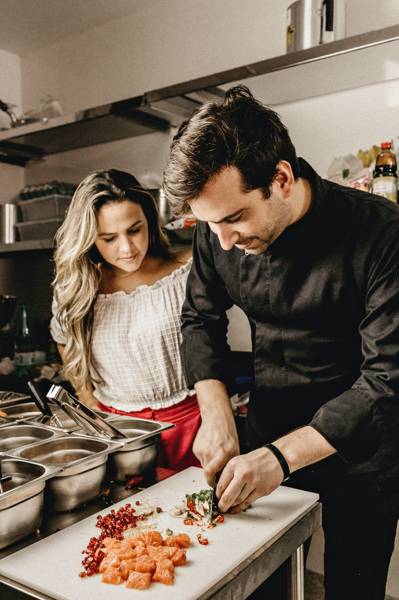

Welcome to Pines of Nowhere! We are an American Italian restaurant/bakery that bakes authentic Italian breads and pastries in the D.C. area. Aside from our homemade baked goods our menu also offers breakfast, lunch, dinner. Come eat with us!

At Pines of Nowhere, we offer quality Italian meals and treats that will remind you of Nonna’s homecooked meals!
Menu
Every Friday evening, from 5pm-7pm, we offer cooking classes for those who want to learn how to make delicious Italian food. Our staff is happy to share our techniques and secrets to those who are eager to learn!
Events

Over a year since our founding, we work hard to offer our customers a little slice of Italy with our commitment to delivering authentic Italian cuisine.
About Us